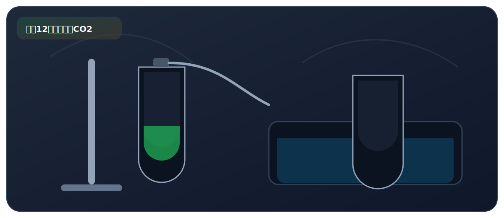

实验十二、二氧化碳的实验室制取

来自 PDF《化学实验基础知识及课本实验总结》的整理。建议：先读“实验原理”，再背“操作顺序”，最后用“误差分析/注意事项”拿分。
实验目标
- 掌握实验室制 CO2：药品选择、发生装置、收集/验满/检验。
必背方程式
- CaCO3 + 2HCl -> CaCl2 + H2O + CO2↑
核心原理
- 碳酸盐与酸反应放出 CO2；CO2 密度比空气大且能溶于水，通常用向上排空气法收集。
关键步骤（怎么做）
- 药品：大理石/石灰石 + 稀盐酸；发生装置：固液不加热（锥形瓶/广口瓶）。
- 收集：向上排空气法；验满：瓶口木条熄灭；检验：澄清石灰水变浑浊。
高频考点（怎么拿分）
- 不用浓盐酸：挥发 HCl 气体导致 CO2 不纯。
- 不用稀硫酸：生成难溶 CaSO4 覆盖表面使反应停止。
安全提醒
- 酸具有腐蚀性：取用遵守规则，溅到用大量水冲洗。
PDF摘录（原文提取，供对照）
化学方程式
- 块状大理石或石灰石（主要成分为 CaCO3）与稀盐酸。
- 注意：稀盐酸不能用稀硫酸替代，因为反应会生成微溶于水的 药品 硫酸钙，附着在大理石表面，阻止反应的进行；
- 也不使用粉末状的 CaCO3 或 Na2CO3，因为反应速率过快， 不便于收集产生的气体。
实验现象
- 固体逐渐溶解，有大量气泡产生 收集方法 向上排空气法（因为 CO2 能溶于水，因此不能用排水法） 长颈漏斗下端要伸入液面以下，形成液封，防止气体从长颈漏
注意事项
- 斗中逸出 导管要接近集气瓶底，力争排尽集气瓶内的空气，使收集的气 体更纯净 验满方法 将燃着的木条放在集气瓶口，木条熄灭，则说明 CO2 已经集满。
- 检验方法 将气体通入澄清的石灰水中，若变浑浊，说明气体为 CO2。
- 化学方程式：